دستورات حلقه در زبانهای برنامهنویسی برای تکرار اجرای یک بخش از برنامه از دستورات حلقه استفاده میشود. حلقههای تکرار باعث کاهش حجم برنامه، خوانایی کد، بهینهسازی الگوریتم برنامه و افزایش کارایی برنامه میشوند.
حلقههای تکرار انواع مختلفی دارند. در زبان جاوااسکریپت این حلقهها شامل for، while، dowhile، for…of و for…in است.
حلقۀ for زمانی که تعداد دفعات تکرار یک کار مشخص باشد، از حلقۀ for استفاده میشود. شکل کلی حلقۀ for بهصورت زیر است:
{ )Initialization; Condition; Increment/Decrement( for
کدی که باید تکرار شود
}
حلقۀ for نیازمند یک شمارنده برای شمارش تعداد دفعات اجرای حلقه است. شمارنده حلقه یک متغیر است که دارای مقدار اولیه و پایانی است. عبارت Initiliazation به مقداردهی اولیه شمارنده حلقه اشاره دارد. در قسمت Condition شرط تکرار حلقه بررسی میشود. برای خروج از حلقه، شرط حلقه باید نقض شود.
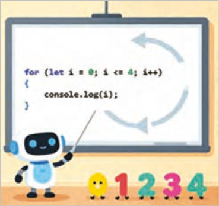
بدین منظور شمارنده حلقه باید در هر بار تکرار حلقه افزوده یا کاسته شود تا مقدار شمارنده از مقدار پایانی گذر کند. عبارات Increment و Decrement بهمعنای افزایش و کاهش مقدار شمارنده است. در صورت عدم استفاده از آکولاد برای تعیین محدوده بلوک حلقه، فقط اولین دستور جزء حلقه به شمار میآید.
شکل 11
بهکارگیری حلقه for
کار کارگاهی
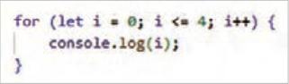
یک فایل جدید با نام workshop7.html ایجاد کنید و اسکریپت روبهرو را برای چاپ اعداد 0 تا 4 بنویسید.
نکته
چنانچه شمارنده حلقه توسط کلمه کلیدی let تعریف شود، دسترسی به مقدار متغیر شمارنده فقط در داخل بلوک for امکان پذیر خواهد بود.
با توجه به این توضیحات درصورتی که بعد از علامت آکولاد بسته، دستور console.log(i) نوشته شود، پیغام خطا صادر میشود.
صفحه ۲۱۴
بیشتر بدانید
جدول 21
حلقه while و do while
while
این حلقهها مجموعهای از دستورات را
do while
تا زمان نقض شدن یک شرط، تکرار
{ do
{(condition) while
میکنند. شکل کلی این حلقهها
کدی که باید تکرار اجرا شود
کدی که باید تکرار شود
;(condition) while }
}
بهصورت مقابل است:
در حلقه while، ابتدا شرط داخل پرانتز بررسی میشود، اگر شرط برقرار باشد دستورات داخل حلقه اجرا میشود، اگر شرط حلقه از ابتدا غلط باشد بنابراین محتوای حلقه اصلاً اجرا نمیشود.
محتوای حلقه dowhile یک بار اجرا میشود، سپس شرط حلقه بررسی میشود. در صورت برقرار نبودن شرط، خروج از حلقه صورت میپذیرد.
در صورتیکه شرط حلقه نقض نشود، دستورات حلقه بهطور مداوم تکرار میشوند. این وضعیت با عنوان حلقه بینهایت (Infiniteloop) شناخته میشود. حلقه بینهایت میتواند منابع سیستم (مانند CPU و RAM) را بهصورت بیرویه مصرف کند که همین مسئله موجب اختلال در عملکرد مرورگر خواهد شد.
بهکارگیری حلقه while و dowhile در فایل workshop7.html اسکریپت زیر را برای چاپ عناصر آرایه colors با استفاده از حلقه while بنویسید.
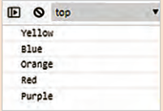
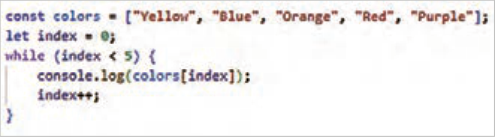
فایل را ذخیره کنید و خروجی آن را در مرورگر به نمایش بگذارید.
حاصل جمع عناصر آرایه numbers را به کمک یک حلقه dowhile محاسبه کنید و نتیجه را در کنسول نمایش دهید.
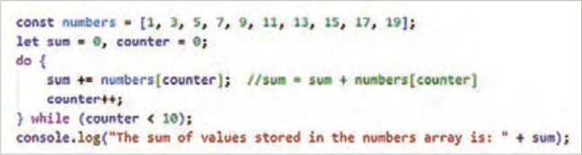
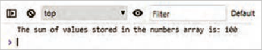
صفحه ۲۱۵
حلقه for…of: این حلقه برای پیمایش عناصر یک مجموعه قابل تکرار مانند آرایه، رشته، مجموعه و...
استفاده میشود. حلقه for…of امکان دسترسی به مقادیر عناصر آرایه را فراهم میکند.
حلقه for … in: این حلقه برای پیمایش کلیدهای اشیا (Objects) و اندیس آرایهها استفاده میشود.
شکل کلی ساختار for … of و for … in بهصورت زیر است:
جدول 22
for … in
for … of
{ (const key in object) for
{ (const element of iterable) for
...…
..…
}
}
متغیر element به عناصر آرایه، مجموعه یا کاراکترهای یک رشته و iterable به شیء قابل تکرار اشاره دارد.
متغیر key به کلید عناصر شیء و اندیس عناصر آرایه اشاره دارد.
کار با ساختار حلقه for … of و for … in
کار کارگاهی
1 در فایل workshop7.html اسکریپت زیر را بنویسید و نتیجه را در کنسول مرورگر مشاهده کنید.
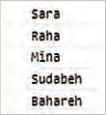
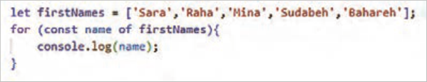
متغیر name به عناصر آرایه firstName اشاره دارد؛ در هر بار اجرای حلقه، متغیر name به عنصر جدیدی از آرایه اشاره میکند.
کنجکاوی
در عبارت ( constnameoffirstNames( for چرا از کلمه کلیدی const استفاده شده است؟
2 برای بررسی عملکرد حلقه for … in در پیمایش عناصر اشیا، اسکریپت زیر را بنویسید و نتیجه را در کنسول مرورگر بررسی کنید.
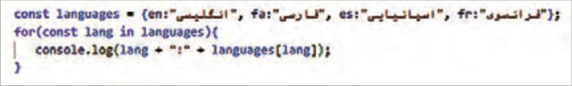
صفحه ۲۱۶
در کد فوق متغیر languages یک شیء حاوی اسامی زبانهاست. در این شیء واژههای مخفف (مانند en، fa و...) به عنوان کلید عنصر و عبارت فارسی متناظر آن (مانند انگلیسی، فارسی و...) به عنوان مقدار عنصر مشخص شده است.
در این کد، حلقه for…in عناصر شیء languages را یکبهیک پیمایش میکند و کلید هر عنصر را درون متغیر lang قرار میدهد. سپس دستور console.log() نام کلید و مقدار متناظر با آن را در کنسول نمایش میدهد.
دستور break این دستور برای خروج از حلقه یا ساختار Switch بهکار میرود. اگر دستور break درون حلقه استفاده شود، اجرای تمام دستورات بعد از آن متوقف شده و خروج از حلقه صورت میگیرد.
نکته
اگر این دستور درون ساختار switch استفاده شود، Caseهای بعدی بررسی نخواهند شد و کنترل برنامه به بعد از آکولاد بسته منتقل میشود.
بهکارگیری دستور Break
کار کارگاهی
اسکریپتی بنویسید که اعداد دو رقمی آرایه زیر را در کنسول مرورگر نمایش دهد.
;]let data = [10,21,37,43,76,83,98,356,200,353,444,1000
برای اینکار در انتهای فایل workshop7.html، اسکریپت زیر را وارد کنید. سپس فایل را ذخیره کرده و خروجی آن را در کنسول به نمایش بگذارید.
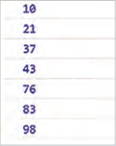
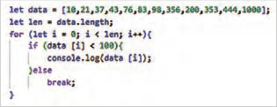
دستور continue
بهکارگیری دستور continue در یک حلقه باعث میشود که اجرای فعلی حلقه متوقف و دور بعدی حلقه اجرا شود. به این معنی که بعد از اجرای دستور continue کنترل برنامه به ابتدای حلقه منتقل میشود و دور بعدی حلقه (در صورت امکان) اجرا میشود.
صفحه ۲۱۷
بهکارگیری دستور Continue
کار کارگاهی
اعداد زوج بین 20 تا 35 را در کنار هم با جداکنندۀ خط فاصله (-) نمایش دهید.
در انتهای اسکریپت فایل workshop7.html، اسکریپت زیر را بنویسید و نتیجه را در کنسول بررسی کنید.
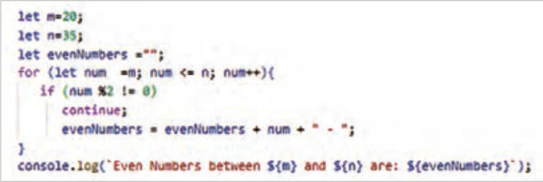
برای حذف خط فاصلۀ آخر (-)، دستور زیر را قبل از دستور console.log بنویسید:
;)0, -3(evenNumbers = evenNumbers.slice
بیشتر بدانید
حلقههای تو در تو حلقههایی که تاکنون معرفی شد، امکان پیمایش عناصر تکبعدی را فراهم میکنند. برای پیمایش عناصری همچون آرایه دوبعدی نیاز به استفاده از حلقههای تودرتو است. این نوع حلقه زمانی ایجاد میشود که درون یک حلقه، حلقه دیگری قرار گیرد. در یک حلقۀ تودرتو، حلقۀ داخلی به تعداد دفعات اجرای حلقه خارجی تکرار میشود.
بیشتر بدانید
بهکارگیری حلقۀ تودرتو
١ جدول ضرب 5*5 را با استفاده از یک حلقه تودرتو نمایش دهید.
٢ اسکریپت زیر را در انتهای اسکریپت فایل workshop7.html بنویسید و نتیجه را کنسول بررسی کنید.
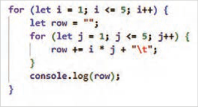
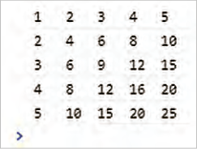
علامت t\ به معنای tab است و برای تنظیم فاصله بین مقادیر استفاده شده است.
صفحه ۲۱۸
فعالیت
بهجای دستور console.log از دستور document.write برای نمایش مقادیر در صفحه مرورگر استفاده کنید.
پیمایش آرایه دوبعدی با استفاده از حلقه for
کار کارگاهی
فایل product.html را باز کنید و کدهای جاوااسکریپت زیر را به آن اضافه کنید.
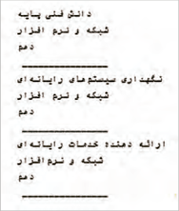
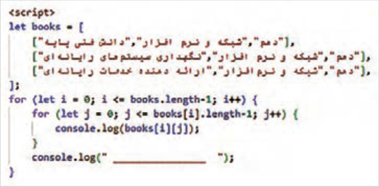
توابع(Functions)
در زبانهای برنامهنویسی به بلوکهای کدی که یک کار مشخص را انجام میدهند، تابع گفته میشود.
برنامهنویس میتواند مجموعهای از دستورالعملها را در قالب یک تابع گروهبندی کند و سپس آن را به عنوان یک واحد مجزا مورد استفاده قرار دهد. این واحدهای مجزا میتوانند بارها مورد استفاده قرار گیرند.
استفاده از توابع در برنامهنویسی نهتنها سرعت توسعه را افزایش میدهد، بلکه خوانایی و قابلیت نگهداری کد را نیز افزایش میدهد. مجموعه دستورات نوشتهشده برای ایجاد یک تابع، تحت یک نام مشخص قابل فراخوانی هستند. یک تابع میتواند مقادیری را بهعنوان ورودی دریافت کند و بعد از اجرای دستورات داخل تابع، مقداری را بهعنوان خروجی برگرداند.
در جاوااسکریپت برای ایجاد یک تابع از شکل کلی زیر استفاده میشود:
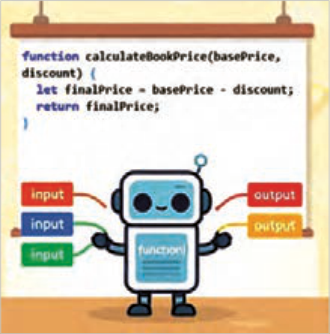
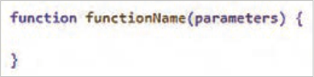
شکل 12
Page 213
Loop statements in programming languages are used to repeat the execution of a section of a program. Repetition loops reduce program size, improve code readability, optimize the program algorithm, and increase program efficiency.
There are different types of repetition loops. In JavaScript, these loops include for, while, dowhile, for…of, and for…in.
The for loop is used when the number of times a task should be repeated is known. The general form of the for loop is as follows:
10|{ )Initialization; Condition; Increment/Decrement( for
The code that should be repeated
}
The for loop needs a counter to count how many times the loop runs. The loop counter is a variable that has an initial value and a final value. The expression Initiliazation refers to initializing the loop counter. In the Condition part, the loop’s repetition condition is checked. To exit the loop, the loop condition must be violated.
For this purpose, the loop counter must be increased or decreased on each repetition of the loop so that the counter’s value passes the final value. The expressions Increment and Decrement mean increasing and decreasing the counter’s value. If braces are not used to define the loop block’s scope, only the first statement is considered part of the loop.
Figure 11
Using the for loop
Workshop
Create a new file named workshop7.html and write the script shown opposite to print the numbers 0 through 4.
Note
If the loop counter is defined with the keyword let, access to the counter variable’s value will be possible only inside the for block.
Based on these explanations, if after the closing brace the statement console.log(i) is written, an error message is issued.
Page 214
Learn more
Table 21
حلقه while و do while
while
These loops repeat a set of statements
do while
until a condition is violated.
{ do
{(condition) while
Their general form
The code that should be executed repeatedly
The code that should be repeated
;(condition) while }
}
is as shown opposite:
In the while loop, first the condition inside the parentheses is checked; if the condition is true, the statements inside the loop are executed. If the loop condition is false from the start, the loop body is not executed at all.
The body of the dowhile loop is executed once, then the loop condition is checked. If the condition is not true, the loop is exited.
If the loop condition is never violated, the loop statements repeat continuously. This situation is known as an infinite loop (Infiniteloop). An infinite loop can consume system resources (such as CPU and RAM) excessively, which will disrupt the browser’s performance.
Using the while and dowhile loops: In the file workshop7.html, write the script below to print the elements of the colors array using a while loop.
Save the file and display its output in the browser.
Calculate the sum of the elements of the numbers array using a dowhile loop and display the result in the console.
Page 215
The for…of loop: This loop is used to iterate over the elements of an iterable collection such as an array, a string, a set, and so on.
The for…of loop provides access to the values of array elements.
The for … in loop: This loop is used to iterate over the keys of objects (Objects) and the indices of arrays.
The general form of the for … of and for … in structures is as follows:
Table 22
for … in
for … of
{ (const key in object) for
{ (const element of iterable) for
...…
..…
}
}
The variable element refers to the elements of an array, a set, or the characters of a string, and iterable refers to an iterable object.
The variable key refers to the keys of object elements and the indices of array elements.
Working with the for … of and for … in loop structures
Workshop
1 In the file workshop7.html, write the script below and observe the result in the browser console.
The variable name refers to the elements of the firstName array; on each execution of the loop, the variable name refers to a new element of the array.
Try this
In the expression ( constnameoffirstNames( for, why is the keyword const used?
2 To examine how the for … in loop works when iterating over object elements, write the script below and check the result in the browser console.
Page 216
In the code above, the variable languages is an object containing the names of languages. In this object, abbreviations (such as en, fa, and so on) are specified as element keys, and the corresponding Persian phrase (such as English, Persian, and so on) is specified as the element value.
In this code, the for…in loop iterates over the elements of the languages object one by one and places the key of each element in the variable lang. Then the console.log() statement displays the key name and its corresponding value in the console.
The break statement: This statement is used to exit a loop or a Switch structure. If the break statement is used inside a loop, execution of all statements after it stops and the loop is exited.
Note
If this statement is used inside a switch structure, the later Cases will not be checked and program control moves to after the closing brace.
Using the Break statement
Workshop
Write a script that displays the two-digit numbers of the array below in the browser console.
;]let data = [10,21,37,43,76,83,98,356,200,353,444,1000
To do this, at the end of the file workshop7.html, enter the script below. Then save the file and display its output in the console.
دستور continue
Using the continue statement in a loop causes the current execution of the loop to stop and the next iteration of the loop to run. That means after the continue statement runs, program control moves to the beginning of the loop and the next iteration of the loop (if possible) is executed.
Page 217
Using the Continue statement
Workshop
Display the even numbers between 20 and 35 next to each other with a hyphen (-) as the separator.
At the end of the script in the file workshop7.html, write the script below and check the result in the console.
To remove the final hyphen (-), write the statement below before the console.log statement:
;)0, -3(evenNumbers = evenNumbers.slice
Learn more
Nested loops: The loops introduced so far make it possible to iterate over one-dimensional elements. To iterate over elements such as a two-dimensional array, you need to use nested loops. This type of loop is created when another loop is placed inside a loop. In a nested loop, the inner loop repeats as many times as the outer loop runs.
Learn more
Using a nested loop
١ Display a 5×5 multiplication table using a nested loop.
٢ Write the script below at the end of the script in the file workshop7.html and check the result in the console.
The \t symbol means tab and is used to set the spacing between values.
Page 218
Activity
Instead of the console.log statement, use the document.write statement to display the values on the browser page.
Iterating over a two-dimensional array using a for loop
Workshop
Open the file product.html and add the JavaScript code below to it.
توابع(Functions)
In programming languages, blocks of code that perform a specific task are called functions.
A programmer can group a set of instructions in the form of a function and then use it as a separate unit. These separate units can be used many times.
Using functions in programming not only increases development speed but also increases the readability and maintainability of the code. The set of statements written to create a function can be called under a specific name. A function can receive values as input and, after executing the statements inside the function, return a value as output.
In JavaScript, the following general form is used to create a function: